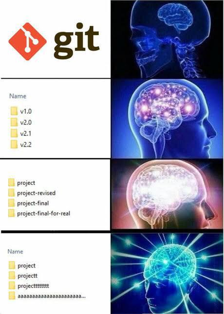

Что такое Git и зачем он нужен?
Git - это система контроля версий (система для отслеживания изменений в файлах)
Представьте, что вы делаете лабу по ОП пишете невероятно сложный код:
Это ваша первая версия кода (файла)
После чего, душный преподаватель требует, чтобы вы не печатали значение функции на экране, а возвращали его из функции, и вы переписываете код следующим образом:
Это ваша вторая версия файла
А теперь представьте, что душный преподаватель передумал и сказал: "Хотя нет, верни как было в 1й раз"
А дальше представьте, что код, который вы писали, был не 4 строки кода, а 400. И так как вы не сохраняли прошлую версию файла, то вам придется вручную заново вспоминать и писать все эти 400 строк кода.
Звучит больно, но если вы предусмотрительный студент, то вы могли взять и сохранить у себя где-то первую версию кода.
Какие варианты для этого могут быть?
Первый, самый банальный: это сделать дубликат файла и писать новую версию кода в копии, а оригинал оставить как есть
Второй - это если вы шарите и используете ту самую, систему контроля версий Git. Теперь вам не нужно вручную копировать и плодить 100500 версий папок и файлов. Вы делегируете эту задачу гиту, который может "фотографировать" каждую новую версию файла, даже если таких версий будут тысячи.
В свою очередь, вы сможете через удобные инструменты смотреть на все эти версии, откатываться к прошлым версиям и работать в команде
Итого каким сверхразумом быть в своих проектах выбор за вами, но на ПП придется сквозь боль и слезы остановиться на первом варианте:
